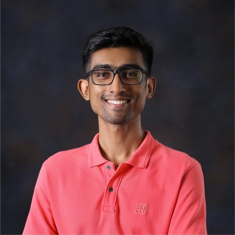
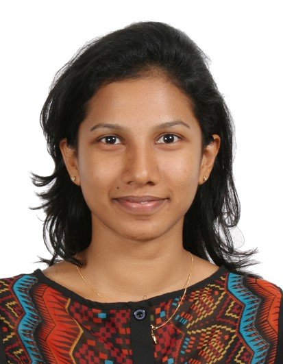
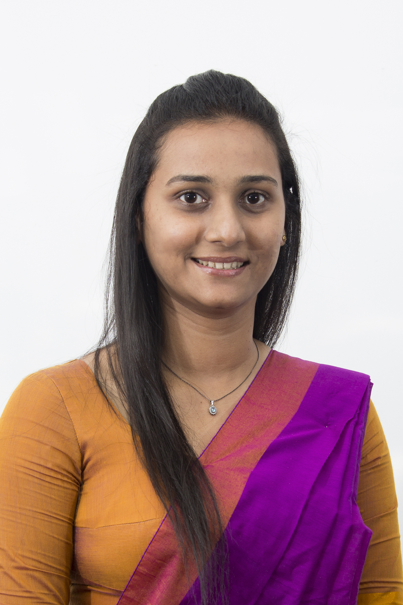

Senash Hettiarachchi
Team Leader
Sri Lanka Institute of Information Technology
Built and optimized the domain-specialized pipeline for Neurosciences

Meet the MediRAG research team, supervisory panel, and institutional context supporting the project.
The team members are presented in leadership order, with the first member identified as the team leader.
Tip: use Previous/Next, the dot indicators, or keyboard arrow keys.
A brief overview of the academic and technical work completed by the team.
As a Faculty of Computing research project specializing in Data Science, MediRAG leverages Retrieval-Augmented Generation (RAG) techniques alongside sound software engineering practices, ensuring both strong implementation quality and academic rigor.
The project was guided by academic mentors who provided direction in research framing, technical development, and evaluation quality.

Supervisor
Faculty of Computing
Sri Lanka Institute of Information Technology
Provided academic supervision and strategic research guidance, helping shape the direction of the project, strengthen the methodology, and maintain the overall quality of the final research outcome.

Co-Supervisor
Faculty of Computing
Sri Lanka Institute of Information Technology
Supported the team with technical and academic feedback during development and evaluation, while encouraging the team to explore new possibilities, connect with broader ideas, and refine the final presentation of the work.